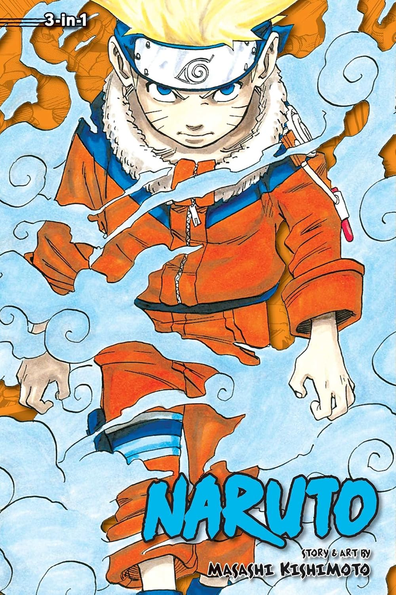
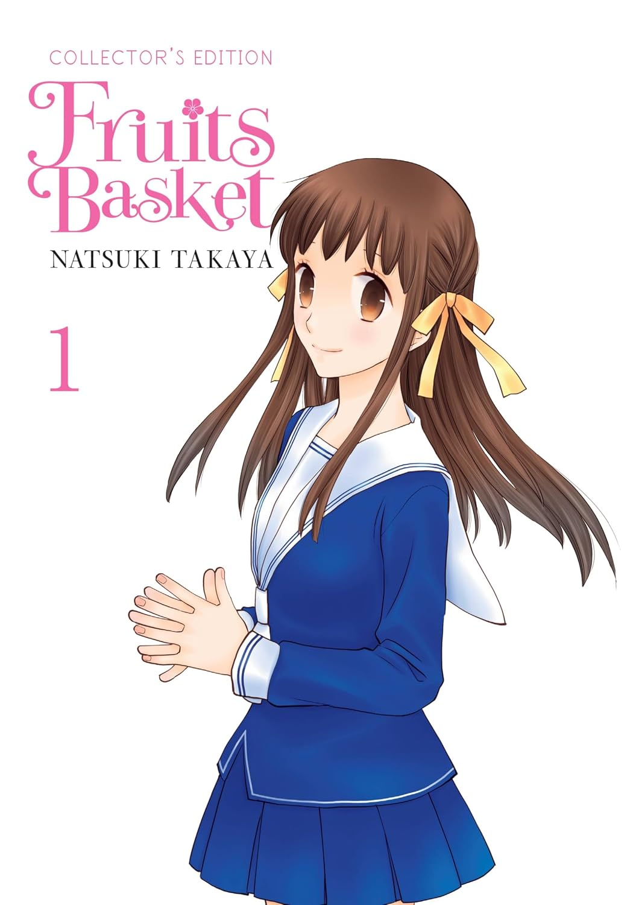
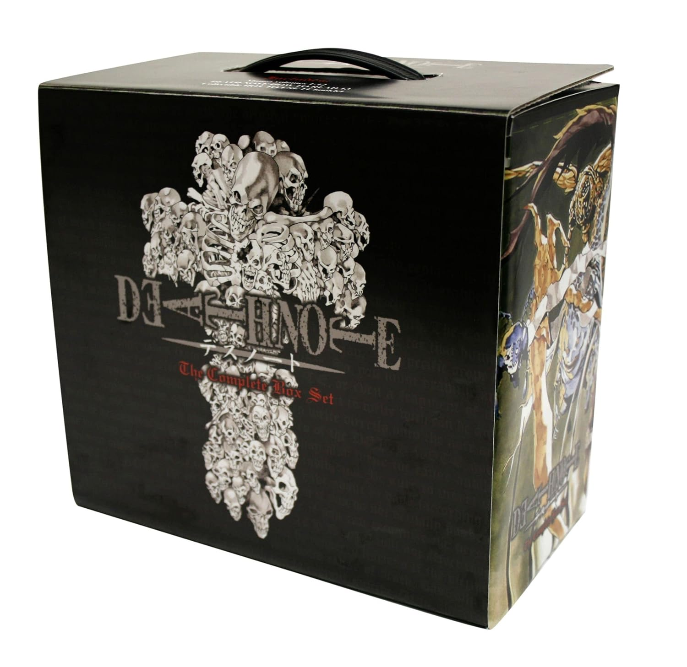

The hardest part of getting into manga isn't the format, it's the sheer volume of choice. Walk into a bookstore's manga aisle for the first time and you're staring down hundreds of spines with zero context. I've been there — I picked up my first volume based entirely on cover art and got lucky. This guide exists so the next person doesn't have to gamble.
Instead of one generic "best manga" list, I've split picks by genre lane, because the mistake most beginners make is starting with something outside their taste just because it's popular. A starter pack should hook you in volume one, not ask for patience.
If you like fast-paced action
Action manga lives or dies on its opening chapters. The best entry points establish a clear power system and a likable lead within the first fifty pages, then escalate stakes at a pace that rewards the next purchase instead of demanding it. Naruto is still the reference point for the genre almost 20 years after volume one — the 3-in-1 omnibus editions are the cheapest way to see if the format hooks you.

Naruto 3-in-1 Edition, Vol. 1 (Covers Vols. 1–3)
Masashi Kishimoto's Naruto, the omnibus edition that bundles the original volumes 1–3 — the full "Land of Waves" opening arc, so you're never left mid-cliffhanger without the next book already in hand. Great binding quality for a set at this price.
Pricing and availability via the Amazon Associates program — prices shown are estimates and may vary.
If you like slower, character-driven stories
Slice-of-life and drama manga ask for a different kind of trust — there's rarely a big hook in chapter one, just careful, observant writing. The picks here reward readers who want something to sit with rather than blast through. Fruits Basket is the genre's most-recommended starting point for a reason — it opens like a gentle family comedy and slowly reveals one of manga's more devastating long-form dramas.

Fruits Basket Collector's Edition, Vol. 1
Natsuki Takaya's Fruits Basket, the hardcover Collector's Edition combining two original volumes with bonus color pages. Quiet, patient pacing with art that rewards close attention — a great gateway if you liked literary fiction but never tried the manga format.
Pricing and availability via the Amazon Associates program — prices shown are estimates and may vary.
If you want a complete, self-contained story
Not everyone wants to commit to a 40-volume ongoing series. Complete series with a defined ending are underrated entry points because they guarantee a satisfying payoff — no cancellation risk, no endless waiting between volumes. Death Note is the gold standard here: 12 volumes, one cat-and-mouse story between a killer and the detective hunting him, and an ending that's been debated online for two decades.

Death Note: Complete Box Set (Vols. 1–12)
Tsugumi Ohba and Takeshi Obata's Death Note, the full 12-volume series in a slipcase with color plates you won't get in the individual volumes — a satisfying way to own a complete story that doesn't leave you waiting for an ending.
Pricing and availability via the Amazon Associates program — prices shown are estimates and may vary.
How to actually pick, if you're still stuck
If none of the above categories jump out at you, default to the genre of movie or show you rewatch most. Love slow-burn mysteries? Start there. Love team sports underdog stories? There's a manga for that exact feeling. The format changes, but the storytelling instincts that already hook you elsewhere will hook you here too.
Physical vs. digital: which to start with
Digital editions are cheaper and instant, which makes them a low-risk way to sample a series before committing physical shelf space to it. But there's a real argument for starting physical if you already know your genre lane: printed volumes hold resale value far better than a digital license that can theoretically vanish if a platform loses distribution rights, and there's something to be said for a reading experience without a backlit screen at the end of a long day.
A reasonable middle ground: sample digitally through a trial subscription, then buy physical copies of anything that hooks you enough to reread. That way you're not gambling shelf space and money on volume one of something you end up dropping after two chapters.
Reading order matters more than people think
Some series have side stories, spin-offs, or companion volumes that aren't strictly required but add meaningful context if read in the right order. Check a series' official reading order guide before buying volume two of something — numbering conventions differ between publishers, and buying the wrong "next" volume is a surprisingly common first-timer mistake.
Bottom line: Buy the multi-volume starter set over a single first volume whenever you can — cliffhangers are brutal, and having the next chapter already on your shelf is the difference between finishing the story and forgetting about it.